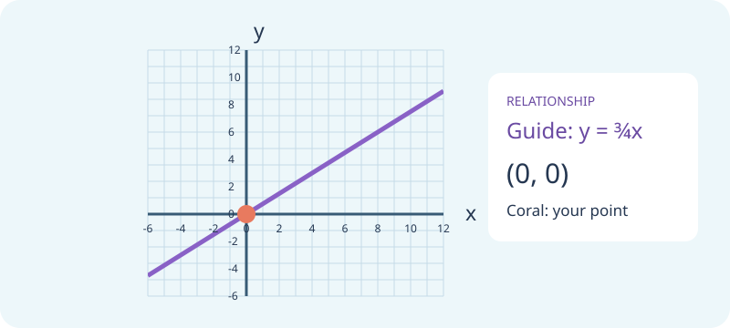

Y7 MATHS · LEARN THROUGH PLAY
Rule Detectives
Pair each story or table with its rule. Look for a constant ratio, a constant product, or neither.

Preparing your game board…
Practice games: your score stays on this page and is not sent to the teacher dashboard. For a recorded Test yourself quiz, use the revision simulator.